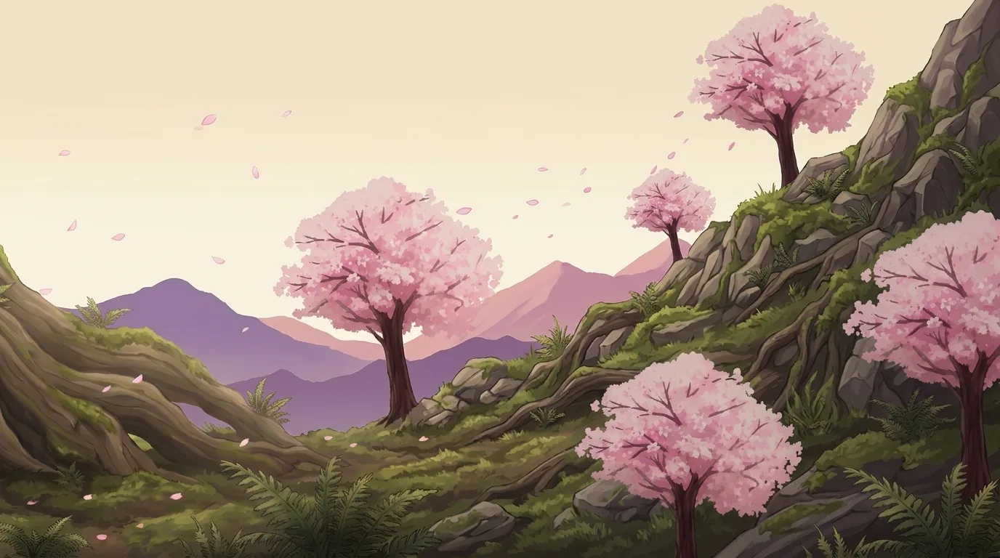
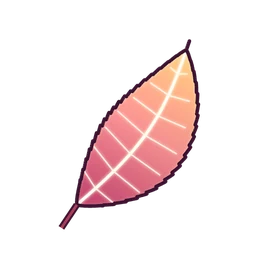
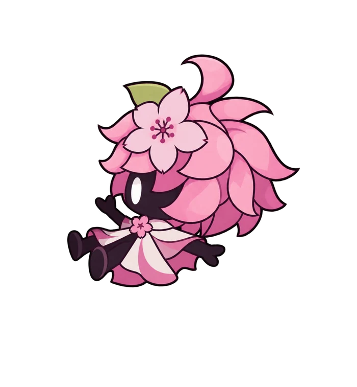
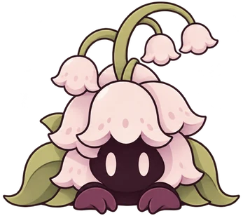
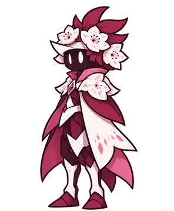
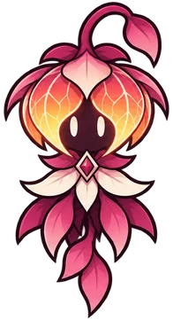
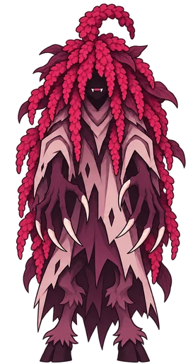
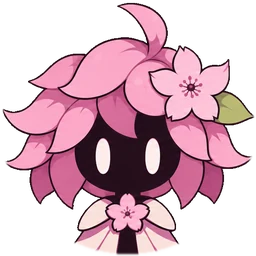

Pétalos de vida
Tu salud son pétalos. Los enemigos sueltan orbes de alma que te los devuelven.
Utsuroi Studios presenta
Lo que queda cuando una flor cae.
Un viaje dibujado a mano a través del limbo.

Toca a Hanna
La historia
Más allá de la vida existe un lugar suspendido: el limbo. Ahí, cada alma toma la forma de una hoja o una flor, y conserva apenas un eco de lo que fue.
Hanna despierta en su habitación sin saber cuánto tiempo ha pasado. Afuera, el camino de los cerezos la llama hacia una ciudad abandonada, un edificio en ruinas y una gruta de cristal donde la luz se ha olvidado de brillar.
En su camino recogerá recuerdos, fragmentos de lo que dejó atrás, y se enfrentará a almas que perdieron el rumbo. Nagori (名残) significa lo que permanece después de que algo se ha ido.


La protagonista
Pequeña, ágil y más valiente de lo que parece. Hanna combate con cortes de pétalos y gana nuevas habilidades al vencer a los guardianes del limbo.

Tu salud son pétalos. Los enemigos sueltan orbes de alma que te los devuelven.
Atraviesa enemigos y ataques sin recibir daño mientras dura el impulso.
Se desbloquea al vencer a la Dedalera. Aférrate a los muros y alcanza lo imposible.
El golpe potenciado. Lo obtienes al derrotar al Amaranto Rojo y se carga golpeando.
El viaje
Donde todo comienza. Aprende a moverte, saltar, atacar y esquivar.
Un sendero en flor que guarda a su primera guardiana: la Dedalera.
Calles en silencio, faroles apagados y el Amaranto Rojo esperando en lo alto.
Desciende por un pozo hasta una cueva donde el agua y los cristales iluminan el camino.
Una arena entre las nubes. Lo que te espera ahí se siente como un dios.
Almas perdidas
No todas las almas encontraron la paz. Algunas florecieron en furia.

Se esconde bajo sus hojas, bloquea tus golpes y responde con campanadas.

Un espadachín de pétalos: estocadas veloces y nubes de polen.

Flota entre las ruinas y dispara semillas encendidas desde el aire.
Dos veces más alta que Hanna. Raíces que brotan del suelo, esporas y campanillas venenosas.

Latigazos, zarpazos y embestidas. Derrótalo para heredar el Alma de Amaranto.
Nadie que haya llegado a la Luz Olvidada ha vuelto para contarlo.
Explora
Cada nivel esconde tres hojas que brillan. Tócalas y descubrirás un mensaje del pasado de Hanna.
Avance
Cómo se juega
Puedes reasignar todas las teclas desde el menú de opciones.

Beta
Juega la beta gratis y cuéntanos qué te pareció.
Descargar para Windows